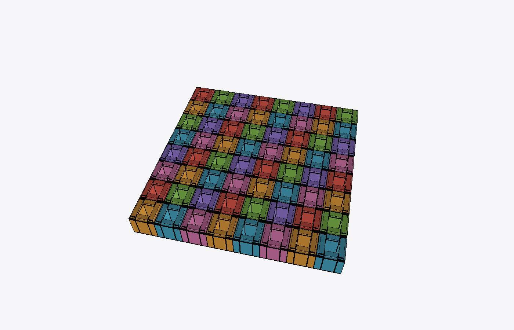
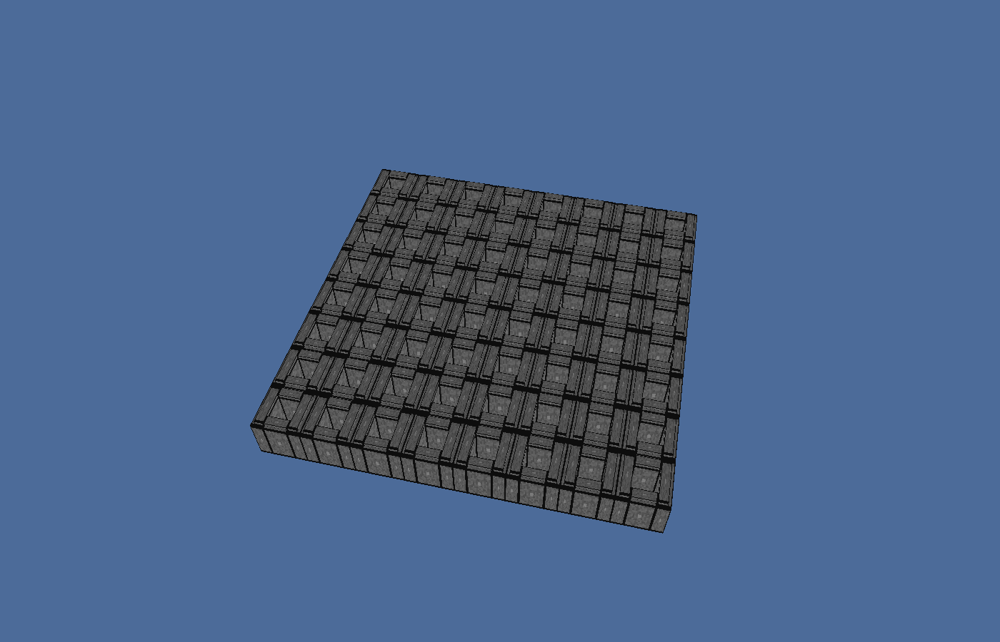
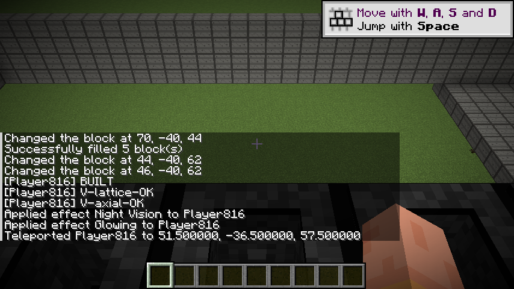
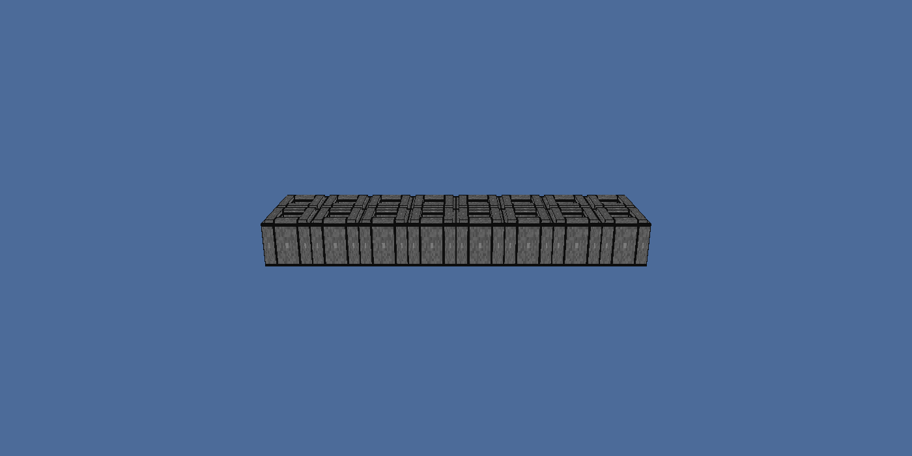
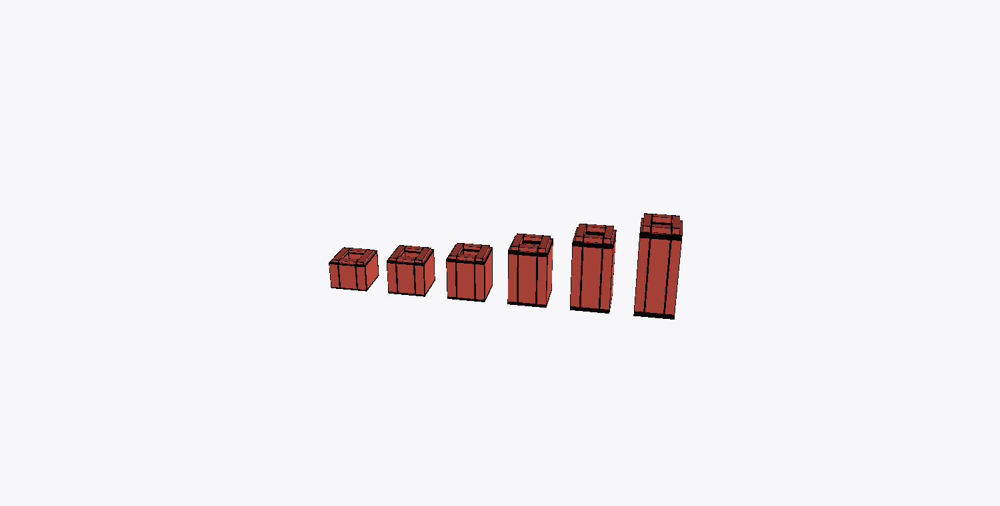
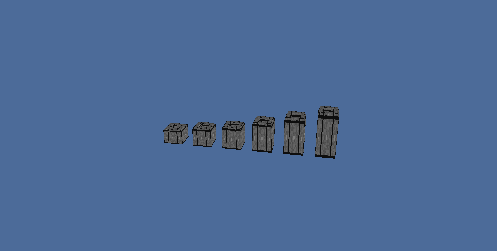
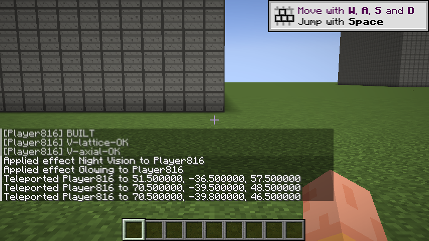
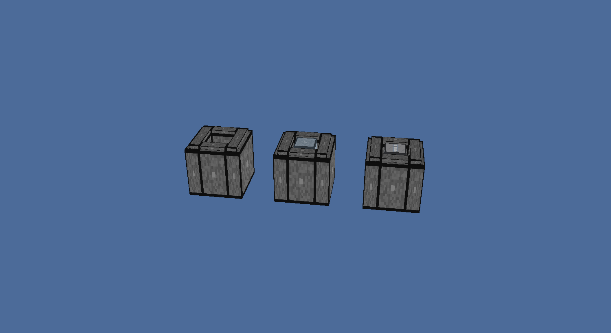

Ben's question: "can Minecraft model an RBMK-1000 as its real, historically compliant separate parts — the graphite core is separate individual blocks of various sizes, not one lump." Below are real pixels from a headless Fabric client and faithful renders of the actual block-model JSON the game loads. Nothing here is an artist's impression.
The block model graphite.json is not a cube: it is a frame of four
walls around an open shaft, with a lip on top where blocks interlock. The core builder lays one such
block per lattice cell (250 × 250 mm at true scale).



csp-modern:graphite and verified with execute if block before the shot.
You can see the block seams.
A real RBMK graphite block is 250 × 250 mm across and 200–600 mm long along the channel, depending on its position in the stack. At 1:4 that cannot be shown (200 mm is 0.8 of a block, 600 mm is 2.4 blocks). On the bit scale — 1 unit = 62.5 mm — it fits exactly: the 250 mm cross-section is 4 units and the longest block is 9.6 units, all inside one Minecraft block's 16-unit model space.



csp-modern:graphite_axial_demo, placed in-world and photographed by the client.
These are in-sandbox measurements (4 GB heap, flat world). The one test that settles it is Ben running it on a real gaming PC — that is the next step, not another benchmark.
| Build | Real blocks | MSPT after build | Verdict |
|---|---|---|---|
| 1 core at 1:4 | 253,780 | 10.1 ms | comfortable |
| 8 cores at 1:4 | 2,030,240 | 9.1 ms | comfortable |
| 16 cores at 1:4 | 4,060,480 | 15.7 ms | comfortable |
| 32 cores at 1:4 | 8,120,960 | 34.5 ms | comfortable |
| 64 cores at 1:4 | 16,241,920 | 67.7 ms | overloaded, no crash |
| 1 full plant (core + equipment) | 353,292 | 2.3 ms | comfortable |
A tick is 50 ms. Block placement runs at ~250,000 blocks/s. The live 3D neutron solver ticks at 4.4 ms/tick over 52,416 nodes. The realistic 1:1 RBMK-1000 core is only ~20,000–30,000 blocks — roughly 10× headroom. Minecraft did not crash at 64 cores; it got slow, which is the expected, recoverable behaviour.
The whole stack is still laid out at 1:4
(RbmkGeometry.METRES_PER_BLOCK = 0.25), where one Minecraft block is one graphite
block. Two consequences, stated plainly:
The bit scale removes both: one Minecraft block = 1 m, and sub-block
geometry places the true 250 mm cell and the true axial lengths. The demonstration above proves the
geometry works inside Minecraft. What remains is to wire the bit engine into
RbmkWorldBuilder so the whole core is built that way — an engine-wiring task, not an
open question about whether Minecraft can hold it.
1:4 is a question, not a compromise. It asks: can Minecraft cope with a science-grade reactor at all, without hanging or crashing? Yes → green light for the full 1:1 core. No → we stop and decide together. The only test that counts is you running it, and the jar is ready:
⬇ Download csp-modern-0.0.1.jar Fabric · Minecraft 1.20.1 · needs Fabric API 0.91.0+1.20.1
Run it: flat creative world, then
/rbmk build demo → /rbmk plant build demo
→ /rbmk plant start → /rbmk plant status →
/rbmk status
The test has already earned its keep. Reviewing it found that the physics mesh was silently tied to the build scale — exactly the hidden simplification the SGB rule forbids:
*_BLOCKS, which derive from METRES_PER_BLOCK (the
drawing scale).METRES_PER_BLOCK == LATTICE_PITCH_M — true
at 1:4 today, but a coincidence.SCALE-DECISION.md §7 says to set METRES_PER_BLOCK = 1.0
for 1:1. That would have collapsed the mesh 4× (49 cells → 12, 28 axial nodes
→ 7, 52,416 → 13,104 active nodes; effective pitch 942 mm, not 250 mm) and the
physics would have been wrong — while the code still looked fine.Fixed. RbmkGeometry now
carries explicit lattice-cell constants (28 / 49 / 56 / 47) computed from
real metres ÷ real pitch; the solver, core, rod-worth and lattice read those; only
the world builder reads *_BLOCKS. Numbers identical today, so
behaviour is unchanged — but the build can now go to 1:1 without touching the
physics.
Proof: ScaleIndependenceSelfTest passes at
METRES_PER_BLOCK = 0.25 and 1.0. Before the fix it
failed at 1.0 (verified against a modified copy).